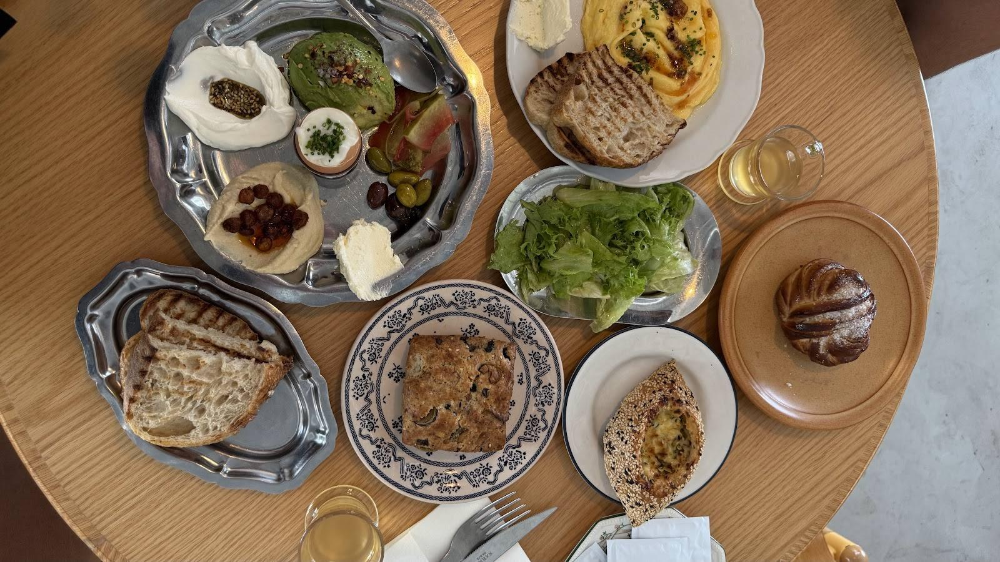
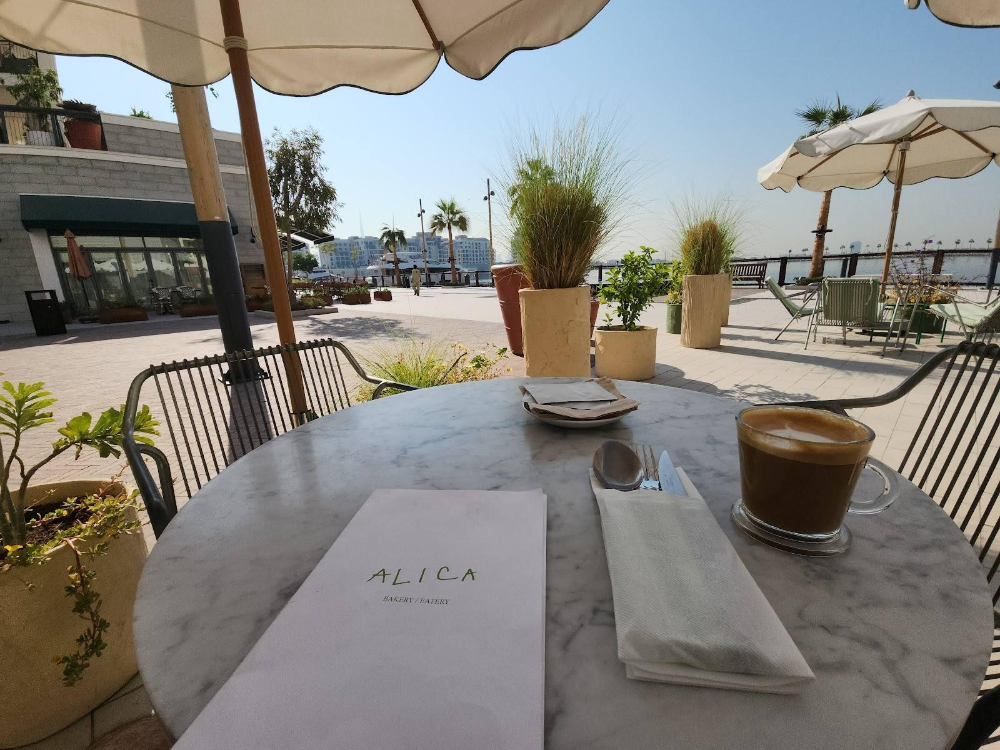
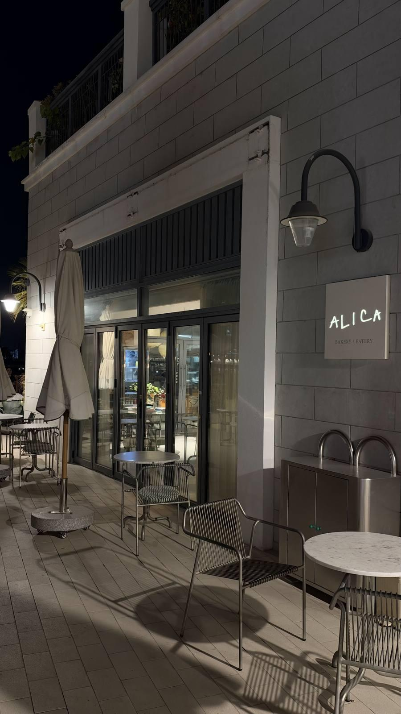
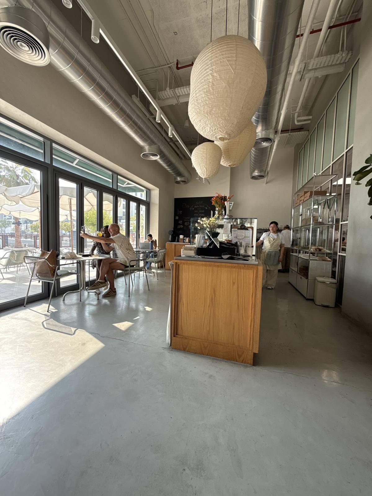
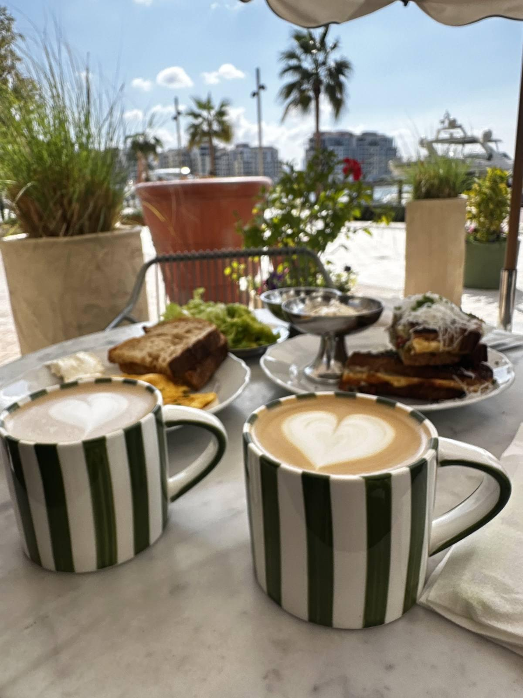
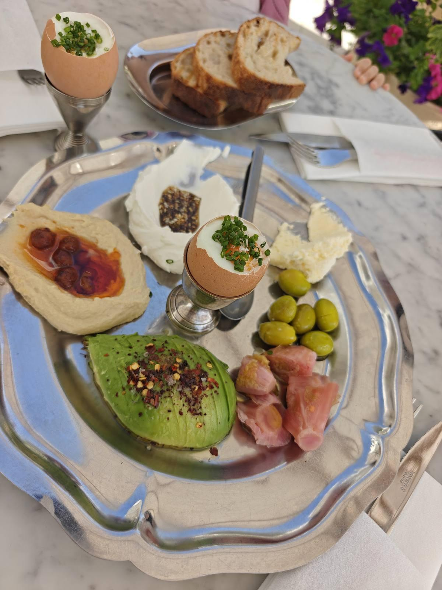
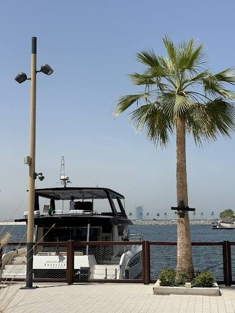
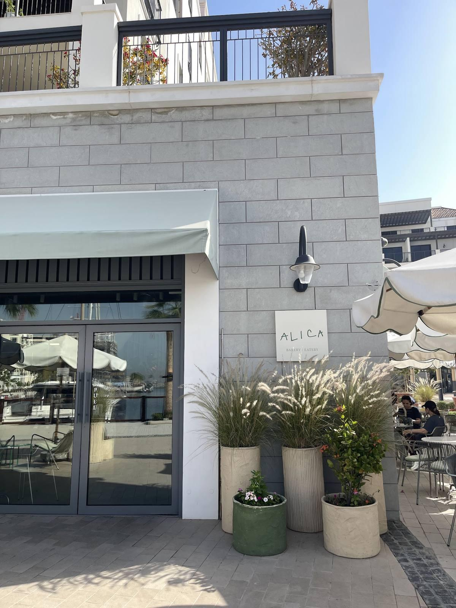

Breakfast plates
Folded eggs, sourdough and seasonal sides.
"Had such a lovely breakfast experience. The breakfast was absolutely delicious and beautifully presented."Bites & Flights with Sana
La Côte 2 · Port de La Mer · Jumeirah 1
A neighbourhood bakery and eatery cooking with local, seasonal and organic produce: sourdough, cinnamon and cardamom buns, folded eggs and long breakfasts on the terrace by the marina.
4.5959 Google reviews959 reviews
Right now
Checking…
From Google Maps popular times
Get a terrace table
Typical busyness by hour, from Google Maps.
Now Quiet Busy
Say hi to
4 reviews mention Ron
Host
"Their pastry and sourdough are on the spot. Thank you Ron for his hospitality."Google reviewer






Photos from the ALICA Bakery / Eatery Google Maps listing
"Had a delightful breakfast at Alicia. My latte was incredible and so were my folded eggs. The salad dressing (I couldn’t figure out what it was) was interesting too. We ended our meal with the lemon cake and the cinnamon roll, both were OK but wouldn’t really crave them in the future. Also, if you’re not a resident around Port de La Mer, finding a place to park here is going to be a very tough task."
"The food was delicious, and you can really taste the quality of the fresh ingredients. The café has a nice atmosphere, and the overall experience was enjoyable. The only downside is the parking—there is no dedicated parking for customers, so finding a spot can be challenging and may require a short walk. Overall, a great place that I would happily visit again."
"The food presentation was nice and tasted good. I also had the matcha and really liked it. The waiters and staff were very accommodating. The location feels very calming, a quiet oasis in the middle of Dubai. It’s such a relaxing space to just slow down and unwind. I would definitely come back whenever I’m looking for a peaceful spot. 🤍"
"Had such a lovely time at ALICA! Terry was our waitress and she was absolutely amazing — so warm, attentive, and gave us the best recommendations from the menu. Everything she suggested was spot on. The coffee and food were fantastic, and the whole atmosphere by the water made it even better. Definitely coming back — highly recommend!"
Find us
ALICA Bakery / Eatery, La Côte 2
2A PDLM Street, Port de La Mer, Jumeirah 1, Dubai
| Monday | 8 AM – 7 PM |
|---|---|
| Tuesday | 8 AM – 7 PM |
| Wednesday | 8 AM – 7 PM |
| Thursday | 8 AM – 7 PM |
| Friday | 8 AM – 8 PM |
| Saturday | 8 AM – 8 PM |
| Sunday | 8 AM – 8 PM |